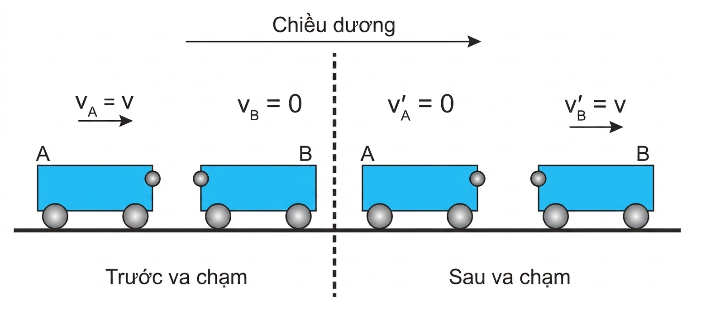
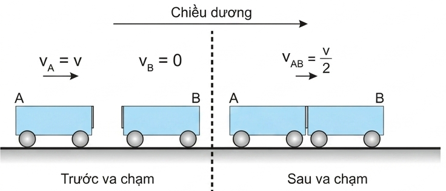
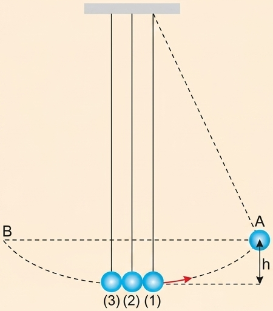
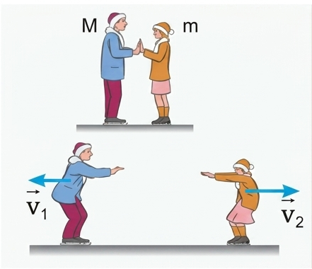

"Một người đang ở trong một chiếc thuyền nhỏ đứng yên, tại sao thuyền bị lùi lại khi người đó bước lên bờ?"
a) Một hệ nhiều vật được gọi là hệ kín khi không có ngoại lực tác dụng lên hệ hoặc nếu có thì các lực ấy cân bằng nhau. Trong một hệ kín, chỉ có các nội lực (các lực tác dụng giữa các vật trong hệ) tương tác giữa các vật. Các nội lực này theo định luật 3 Newton trực đối nhau từng đôi một.
b) Nếu trong quá trình tương tác, các nội lực xuất hiện lớn hơn các ngoại lực rất nhiều thì có thể bỏ qua các ngoại lực và coi hệ là kín. Ví dụ như: va chạm, đạn nổ, pháo nổ,...
Hãy cho ví dụ về hệ kín.
Xét một hệ kín gồm hai vật trượt trên một đệm khí đến va chạm với nhau.
Vì các lực \(\vec{F}_1\) và \(\vec{F}_2\) là cặp nội lực trực đối nhau, nên theo định luật 3 Newton, ta viết:
Dưới tác dụng của các lực \(\vec{F}_1\) và \(\vec{F}_2\), trong khoảng thời gian \(\Delta t\), động lượng của mỗi vật có độ biến thiên lần lượt là \(\Delta\vec{p}_1\) và \(\Delta\vec{p}_2\).
Áp dụng công thức \(\vec{F}.\Delta t = \Delta\vec{p}\) cho từng vật, ta có:
Từ (29.1) và (29.2), suy ra: \(\Delta\vec{p}_1 = -\Delta\vec{p}_2\) hay \(\Delta\vec{p}_1 + \Delta\vec{p}_2 = \vec{0}\).
Gọi \(\vec{p} = \vec{p}_1 + \vec{p}_2\) là động lượng toàn phần của hệ. Ta có biến thiên động lượng toàn phần của hệ bằng tổng các biến thiên động lượng của mỗi vật: \(\Delta\vec{p} = \Delta\vec{p}_1 + \Delta\vec{p}_2 = \vec{0}\).
Biến thiên động lượng của hệ bằng không, nghĩa là động lượng toàn phần của hệ không đổi.
ĐỊNH LUẬT BẢO TOÀN ĐỘNG LƯỢNG
"Động lượng toàn phần của hệ kín là một đại lượng bảo toàn."
Kết quả này có thể mở rộng cho hệ kín gồm nhiều vật. Định luật này có nhiều ứng dụng thực tế: giải các bài toán va chạm, làm cơ sở cho chuyển động phản lực.
Một hệ gồm hai vật có khối lượng lần lượt là \(m_1\) và \(m_2\), chuyển động với vận tốc có độ lớn lần lượt là \(v_1\) và \(v_2\) hướng vào nhau. Bỏ qua mọi ma sát và lực cản. Viết biểu thức của định luật bảo toàn động lượng cho hệ này.
Có hai kiểu va chạm thường gặp là va chạm đàn hồi và va chạm mềm.
Hình 29.1 mô tả một thí nghiệm về va chạm đàn hồi.

Hình 29.1. Va chạm đàn hồi
Dùng hai xe A và B giống nhau, ở đầu mỗi xe có gắn một quả cầu kim loại nhỏ, cho xe A chuyển động với vận tốc \(v_A = v\) tới va chạm với xe B đang đứng yên. Kết quả của va chạm làm xe A đang chuyển động thì dừng lại, còn xe B đang đứng yên thì chuyển động với đúng vận tốc \(v'_B = v\).
Còn nếu xe A chuyển động đến va chạm trực diện với xe B có vận tốc \(v_B = -v\), thì sau va chạm cả hai xe đổi chiều vận tốc: \(v'_A = -v\) và \(v'_B = v\). Đó là hai ví dụ về kiểu va chạm đàn hồi.
1. Hãy tính động lượng và động năng của hệ trước và sau va chạm đàn hồi (Hình 29.1).
2. Từ kết quả tính được rút ra nhận xét gì?
Hình 29.2 mô tả một thí nghiệm về va chạm mềm.

Hình 29.2. Va chạm mềm
Dùng hai xe A và B giống nhau, ở đầu mỗi xe có gắn một miếng nhựa dính. Cho xe A chuyển động với vận tốc \(v_A = v\) tới va chạm với xe kia đang đứng yên. Sau va chạm, cả hai xe dính vào nhau và chuyển động với vận tốc bằng \(V_{AB} = \frac{v}{2}\). Kiểu va chạm "dính" này gọi là va chạm mềm.
1. Hãy tính động lượng và động năng của hệ trong Hình 29.2 trước và sau va chạm.
2. Từ kết quả tính được rút ra nhận xét gì?
3. Trong Hình 29.3, nếu kéo bi (1) lên thêm một độ cao h rồi thả ra. Con lắc sẽ rơi xuống và va chạm với hai con lắc còn lại. Hãy dự đoán xem va chạm là va chạm gì. Con lắc (2), (3) lên tới độ cao nào?

Hình 29.3
Vận dụng định luật bảo toàn động lượng để giải thích:

Hình 29.4
Câu 1: Hệ nào sau đây có thể được coi là hệ kín?
Câu 2: Đơn vị của động lượng là gì?
Câu 3: Phát biểu nào sau đây là đúng về định luật bảo toàn động lượng?
Câu 4: Đặc điểm nào sau đây là của va chạm mềm?
Câu 5: Biểu thức đúng của định luật bảo toàn động lượng cho hệ gồm 2 vật va chạm là:
Bài 1:
Một xe chở cát khối lượng \(m_1 = 390\) kg đang chuyển động theo phương ngang với vận tốc \(v_1 = 8\) m/s. Một viên đạn khối lượng \(m_2 = 10\) kg bay ngang với vận tốc \(v_2 = 120\) m/s cùng chiều với xe cát, đến ghim vào trong cát. Tính vận tốc của xe cát sau khi viên đạn ghim vào.
Bài 2:
Một khẩu súng đại bác khối lượng \(M = 500\) kg đứng yên. Bắn ra một viên đạn khối lượng \(m = 5\) kg với vận tốc \(v = 400\) m/s theo phương ngang. Bỏ qua ma sát. Tính vận tốc giật lùi của súng sau khi bắn.
Bài 3:
Một vật khối lượng \(m_1 = 2\) kg chuyển động với vận tốc 3 m/s đến va chạm đàn hồi trực diện với vật khối lượng \(m_2 = 3\) kg đang đứng yên trên mặt phẳng nằm ngang không ma sát. Xác định vận tốc của hai vật ngay sau va chạm.